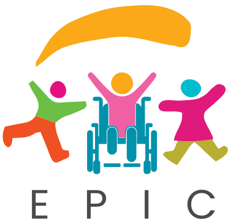
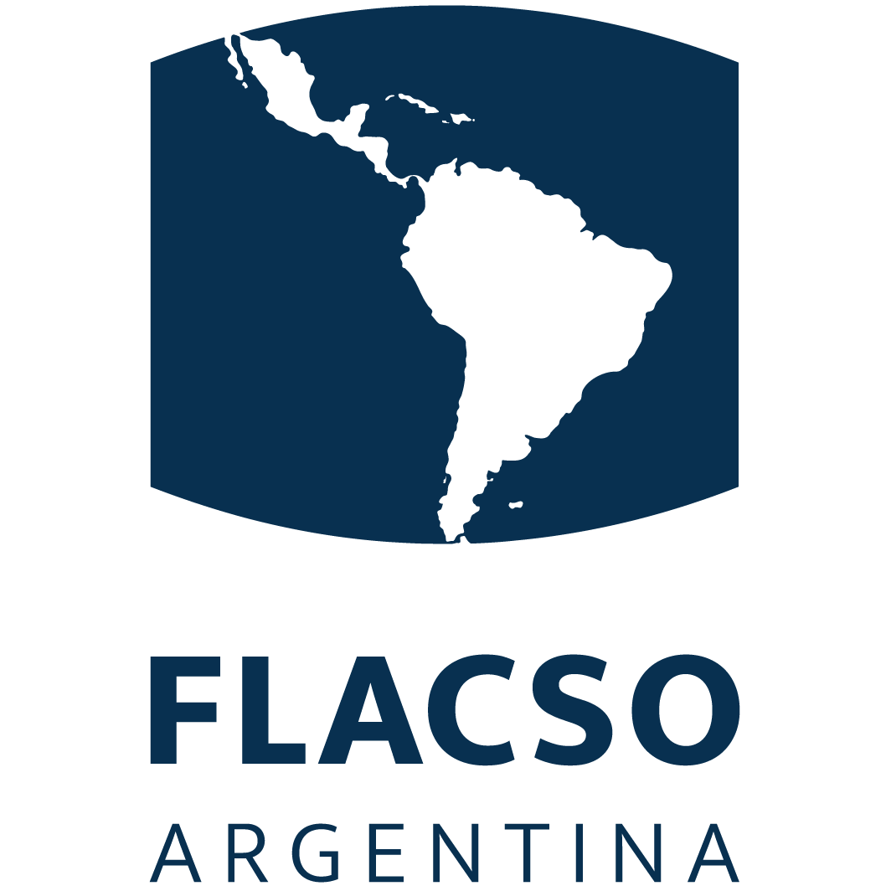
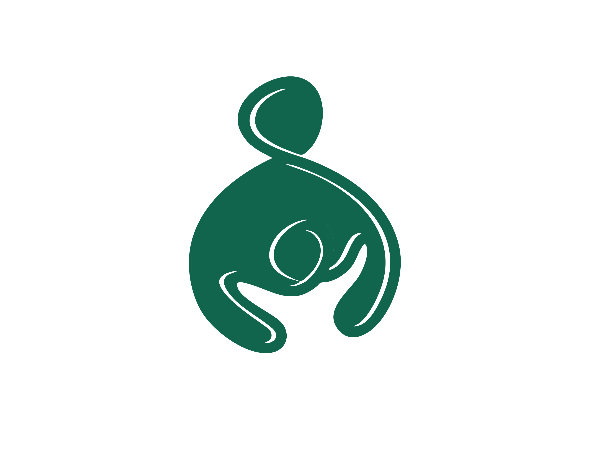

Making the city awesome for kids!

Have you ever wondered who decides where the new parks, schools and clean streets in your city go — and how you can help?
The Accra Metropolitan Assembly made its very own district plan so that every child in the city can grow up safe, healthy, happy and ready to learn. The plan brings families and community leaders onto the same team, so every kid gets the care and support they need to succeed.
First, two big words
Grown-ups use some tricky words for this. Here is what they actually mean.
Imagine your neighbourhood as a huge team — the District Assembly is like the coaches and leaders of that team!
They are the local government people whose job is to take care of the town: fix roads, build schools, keep streets clean, and make sure everyone stays safe and happy.
A district plan is like a giant map made by local leaders to turn a town or city into a much better place to live!
Instead of adults just guessing what to do, the plan lists the biggest problems — dirty streets, schools that need help, parks that need to be safer — then writes a step-by-step checklist for fixing them.
Why did they make the plan?
The big goal is the same for every single kid — no matter who they are or what their family has.
Streets, homes and playgrounds where children are looked after and protected.
Good food, clean surroundings and care from doctors and nurses when it is needed.
Loving families, fun places to play, and schools that make children curious.
Who is the plan for?
Everybody counts — and the plan gives extra help to the families who need it most.
Every little kid in Accra, and the grown-ups who look after them.
Kids whose bodies or brains work in their own way, and who need the right support to join in.
So that not having much money never decides what a child can become.
Places with more health problems, or with dirtier air, water and streets.
The big idea
You are the reason the whole plan exists — and the best person to say what your city needs.
Parents and carers get tips, tools and support so home is a happy place to grow up in.
Neighbours, teachers and leaders all pull in the same direction instead of working alone.
Understanding the plan
To make it all happen, Accra's leaders are focusing on five big areas — and every one of them points back at the same thing.
Green & Clean Spaces. Kids need safe, clean places to play and grow — so the city is planting trees, sorting its rubbish and cleaning up fast.
Environment
Kids need safe, clean places to play and grow!
Building green parks and tree-filled spaces where children can play safely.
Teaching schools and families how to separate their trash using special coloured bins and recycling programmes.
Using phone apps and digital maps to spot dirty areas and clean them up fast.
Creating a special place where leftover food and plant scraps are turned into compost, which is food for trees and gardens.
Disability inclusion
Every child is special, and no one gets left behind!
Helping mothers of children with special needs join schools, to support teaching and learning.
Teaching everyone how to be kind, welcoming and supportive to kids of all abilities.
Helping families get health insurance that covers special medical care and therapy.
Poverty reduction
When families have what they need, children thrive!
Creating jobs in fun areas like beach tourism and local businesses.
Using technology and digital markets to help parents sell goods, earn money and support their homes.
Responsive caregiving
Happy homes and caring neighbours make kids feel safe.
Setting up community centres where parents can learn great tips for taking care of young children.
Organising fun events, community clubs and mentorship programmes to bring families together.
Nutrition
Growing bodies need good food!
Teaching families how to grow their own fresh, healthy vegetables at home using recycled containers.
Sending special mobile-money food vouchers to families who need help buying healthy meals.
Why five zones and not one
Imagine building Accra out of giant toy blocks. Every colour is one of the five action zones — take a colour away and the whole city wobbles.
Clean parks are lovely — but not if families have no food. Good food helps — but not if children are left out of school. When all five zones are built together, Accra becomes a city where every child can grow up safe, healthy and happy.
This is your city too. Your voice helps decide what gets fixed first.
Your turn
Speak up about your neighbourhood
Sort your rubbish into the right bin
Make sure every kid is included
Working together
These are the teams helping Accra turn the plan into real parks, schools and healthy meals.


This research was funded by the National Institute for Health and Care Research (NIHR) [NIHR158910] using UK international development funding from the UK Government to support global health research. The views expressed in this publication are those of the author(s) and not necessarily those of the NIHR or the UK government.